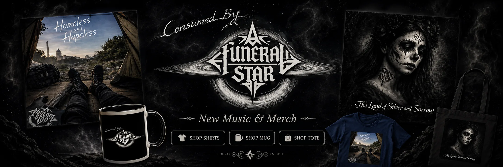

Discography
The Collapse Trilogy
Subjects caught by the inescapable gravity of their situations, like living inside a funeral star.


Cosmic Collapse
Consumed by a Funeral Star
Cosmic black metal and death metal built around singularities, entropy, and gravitational tombs.
Societal Collapse
Homeless and Hopeless
Death metal, hardcore punk, crust, and d-beat pressure from the human scale.
Romantic Collapse
The Land of Silver and Sorrow
Romantic subjects trapped inside the violence of their border narco town, where love and survival pull against the same gravity.
- Night of the Dead
- Saints and Sinners
- Vals del Diablo
- Empty Streets, Broken Dreams
- The Cost of Silver
- The Land of Silver and Sorrow
- Close Your Eyes and Pretend to Sleep
- Plomo y Polvo
- Aqui No Avisa
- Cradle to Casket
- Allpamanta
- Clavada en Tu Voz
- Lines in the Sand
- Seeds the Devil has Sown
- Days of the Living
Video
Start with the funeral dance.
Shorts
Shorts.
Merch
Wear the gravity.
DistroKid store
Official store slot for shirts, posters, and release drops.
Open storeBandcamp
Digital albums, direct support, and release pages.
Open BandcampSupport
Keep the signal alive.
Mailing list
Stay close.
News on releases, shorts, and shows. No spam.
Booking, press, or general inquiries: contact@afuneralstar.com
About
A Funeral Star
Experimental Death Metal Band from Washington D.C.
Our music moves from the street to the ritual to the event horizon: poverty, grief, addiction, history, collapse. Every record is another orbit around the same force.